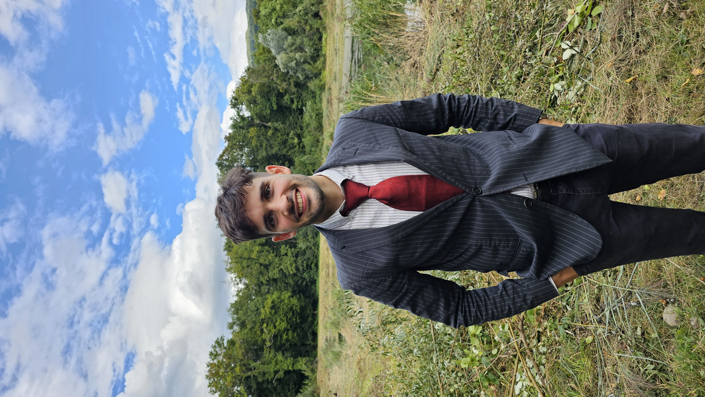

Industrial and transportation engineer focused on operations research, routing optimization, and applied data analytics for logistics and supply chain systems.
Get in touch →
I am an industrial engineer graduate specializing in transportation optimization at the TU Dresden. My work sits at the intersection of mathematical modeling and real operational decision-making. I have strong real-world experience in implementing optimization algorithms and simulation models to solve complex logistics problems.
My domain expertise covers:
Worked in the operations and strategy department of IDOM, one of the biggest Spanish engineering firms. My main responsibilities included analysis of logistics processes in industrial plants, mainly through simulation (FlexSim) and other tools. I also participated in customer acquisition through participating in customer meetings, and preparing technical offers.
Worked alongside the operations research department to improve the customers' ordering process at Flaschenpost.de. The goal was supporting decision-making through Reinforcement Learning and Data Analysis.
From the start of my second year, I was selected as part of the academic team at the university, which involved supporting professors by grading exams and leading tutorials. I was mainly involved in engineering mathematics courses and Industrial Engineering specific courses (e.g. operations research, Product design and development, etc.).
Designed and implemented a vehicle routing algorithm with time windows and capacity constraints for beverage delivery operations. Measurable reductions in average route length and improvements in on-time delivery.
Time-series forecasting pipeline combining historical order data with weather and calendar features to predict regional demand and inform capacity planning decisions.
Mixed-integer programming model that assigns SKUs to warehouse locations based on pick frequency, product affinity, and ergonomic considerations. Developed academically and subsequently extended to a real dataset.
Implementation of savings, nearest-neighbor, and 2-opt heuristics in modern C++ with a CMake-based build system, benchmarked against standard TSPLIB instances.
For professional inquiries regarding operations research, routing optimization, or applied data analytics, please use the links below.